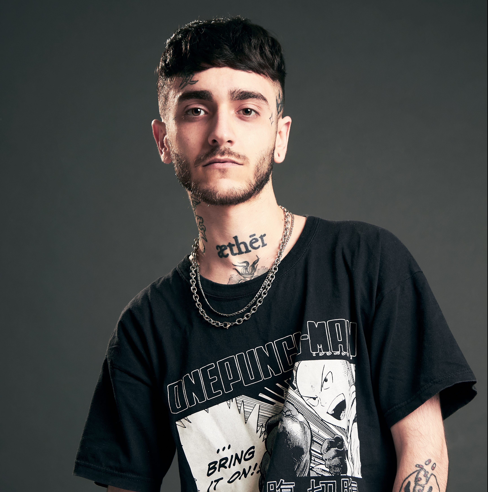

Muerejoven
Biografia
Muerejoven es un artista musical argentino de 25 años de edad, su verdadero nombre es Nicolás Exequiel de Lorenzo, nacio 23 de Julio del año 1997, crecio en Buenos Aires, forma parte de una crew llamada RipGang junto con otros artistas como Dillom, Saramalacara, ODDMAMI, entre otros.
Arranco con la musica en el 2016 y a dia de hoy tiene varios temas que se hicieron populares en la escena, ademas de haber dado diversos shows a lo largo del pais.
Canciones
Algunos temas de los que saco son: